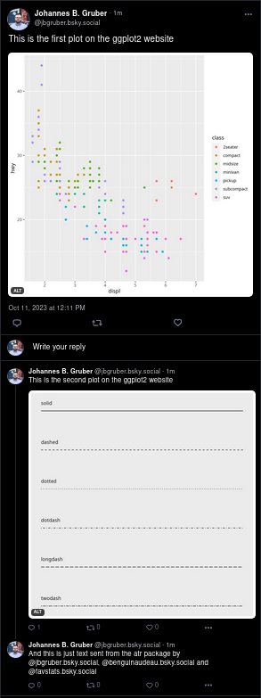

Interacting with Blue Sky: Posts, Replies, and Deletions
In this section, we will cover how to interact with the Blue Sky platform by creating posts (skeets), replying to them, and eventually, if necessary, deleting them.
Posting a Skeet
Here’s how you can easily post a skeet to your account:
post <- post_skeet(text = "Posting around")By running the above command, you’ve successfully created a skeet with the content “Posting around.”
Replying to a Skeet
Engaging with the Blue Sky community often means replying to existing skeets. Here’s how you can craft a reply:
reply <- post_skeet(text = "Replying around", in_reply_to = post$uri)Notice the in_reply_to parameter? This ensures that our reply is linked to the original post, creating a thread of conversation. If you don’t have the URI of a skeet, a link to it will also do.
Deleting a Skeet
Whether it’s to correct an error, remove outdated information, or any other reason, sometimes you might want to delete a skeet. Here’s how:
delete_skeet(post_url = reply$uri)Crafting Threads in Blue Sky
Threads are a series of connected posts or “skeets” on Blue Sky. They’re a great way to communicate longer ideas or stories, where each skeet builds on the previous one. In this section, we’ll explore how to create a thread seamlessly.
A thread is essentially a series of individual skeets. Here’s how you
can do it programmatically using post_thread:
post_thread(texts = c("This is the first amazing skeet.",
"Now I am expanding upon my skeet!",
"Conclusion: I skeet therefore I am."))Following and Unfollowing Users in Blue Sky
One of the fundamental ways to connect with other users is by following them, allowing you to see their posts in your feed. Conversely, if you decide that you no longer want to see updates from a particular user, you can unfollow them.
# Follow a user by their handle
follow(actor = "benguinaudeau.bsky.social")Support for posting media
Media can be posted by using a path to a file. They can also be included in a thread.
First let’s create some plots that we want to send:
# make a basic plot
plot <- ggplot(mpg, aes(displ, hwy, colour = class)) +
geom_point()
# save it to a file
f1 <- ggsave(filename = tempfile(pattern = "1", fileext = ".png"), plot = plot)
# a second basic plot
lty <- c("solid", "dashed", "dotted", "dotdash", "longdash", "twodash")
linetypes <- data.frame(
y = seq_along(lty),
lty = lty
)
plot2 <- ggplot(linetypes, aes(0, y)) +
geom_segment(aes(xend = 5, yend = y, linetype = lty)) +
scale_linetype_identity() +
geom_text(aes(label = lty), hjust = 0, nudge_y = 0.2) +
scale_x_continuous(NULL, breaks = NULL) +
scale_y_reverse(NULL, breaks = NULL)
# again we save it to a temporary file
f2 <- ggsave(tempfile(pattern = "2", fileext = ".png"), plot = plot2)Now we post the pictures in a thread:
post_thread(texts = c("This is the first plot on the ggplot2 website",
"This is the second plot on the ggplot2 website",
"And this is just text sent from the atr package by @jbgruber.bsky.social, @benguinaudeau.bsky.social and @favstats.bsky.social"),
images = c(f1, f2, ""),
image_alts = c("first ggplot2 plot",
"second ggplot2 plot",
""))